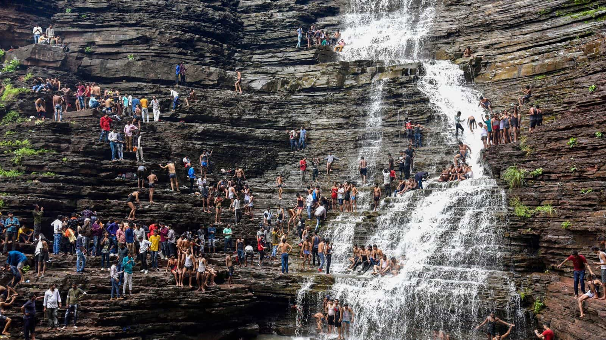
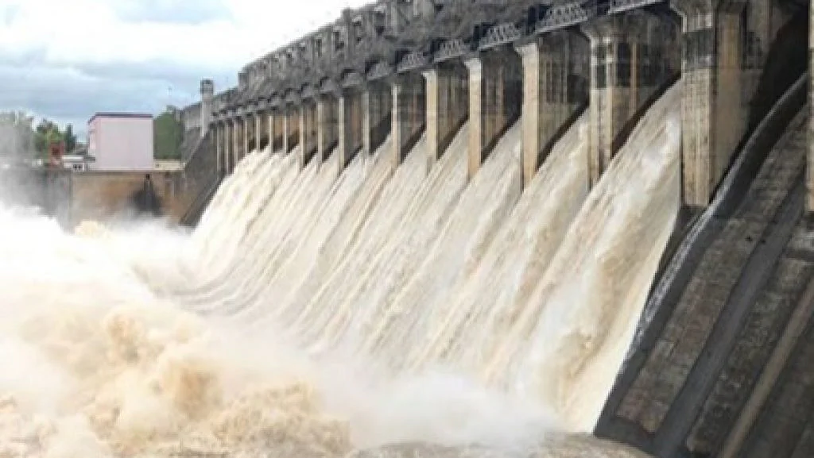
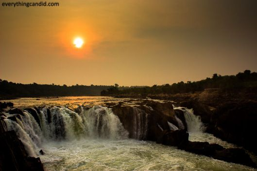
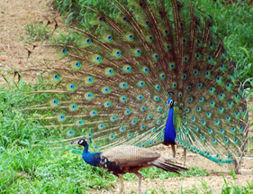

Nidan Waterfall
First on the list of famous waterfalls in Jabalpur is the Nidan waterfall. It is one of the most beautiful waterfalls of Madhya Pradesh. Also known as the Katangi falls, it is located at a distance of 30 km from the main Jabalpur City. The water here slowly tickles down the staircase like a formation of black rocks standing at a height of 30 m. This prevents the harsh flow and makes for a pleasing and serene site to relax and rejuvenate in the lap of mother nature.
Khandari Lake
The Khandari waterfall is situated on the Khandari lake in the Dumna Nature Reserve Park of Jabalpur. Besides the waterfall and serene surroundings that contribute to tourism, the lake is also a major source of water for the people of Jabalpur.

Bagri Dam
Bargi Dam is one of the first completed dams out of the chain of 30 major dams to be constructed on Narmada River in Madhya Pradesh, India. Two major irrigation projects, named Bargi Diversion Project and Rani Avantibai Lodhi Sagar Project, have been developed by the Bargi Dam administration

Bhedaghat
Yet another cooling and the crowning glory of waterfalls in Jabalpur is the Dhuandhar Fall. Originally known as the Smoke Cascade, the Dhuandhar Waterfall in Jabalpur attracts travellers with its astonishing marble mountains standing at a height of 30m on the holy Narmada River. The water here makes its way through the rocky marble mountains and forcefully plunges, creating a mass of mist that justifies its name ‘Dhuandhar’. The force of falling water is so strong that it can be heard from far off places as well. The place is also famous among locals as Jabalpur Bhedaghat waterfall as it is located in the Bhedaghat village.

Kanha National Park
Kanha Tiger Reserve, also known as Kanha–Kisli National Park, is one of the tiger reserves of India and the largest national park of the state of Madhya Pradesh. The present-day Kanha area is divided into two protected areas, Hallon and Banjar, of 250 and 300 km2 (97 and 116 sq mi), respectively. Kanha National Park was created on 1 June 1955 and was designated a tiger reserve in 1973. Today, it encompasses an area of 940 km2 (360 sq mi) in the two districts Mandla and Balaghat